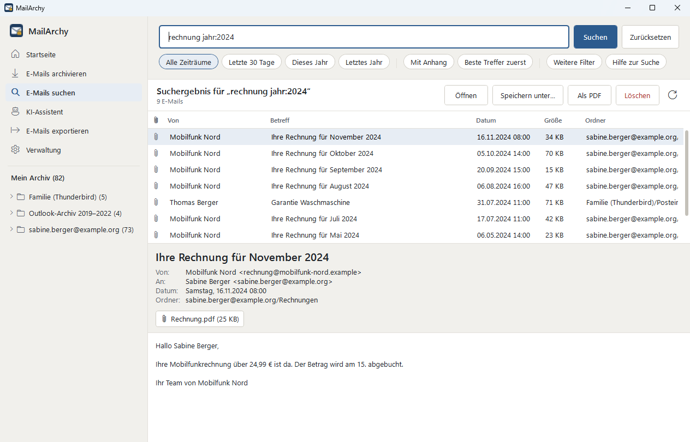
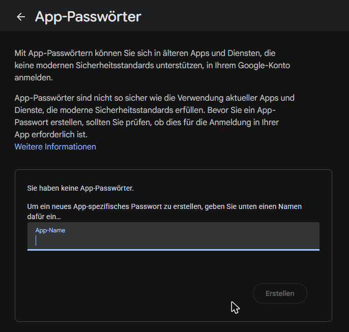
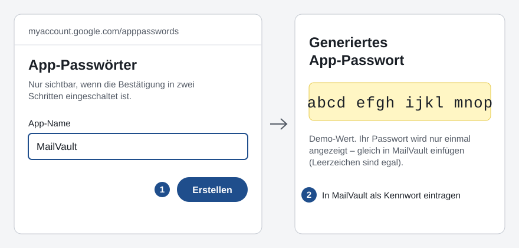
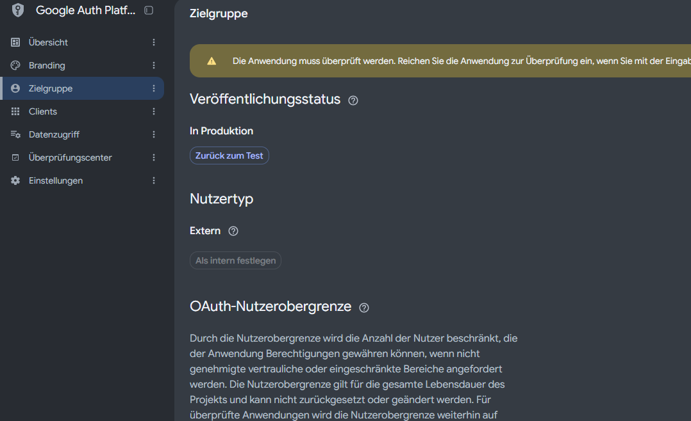
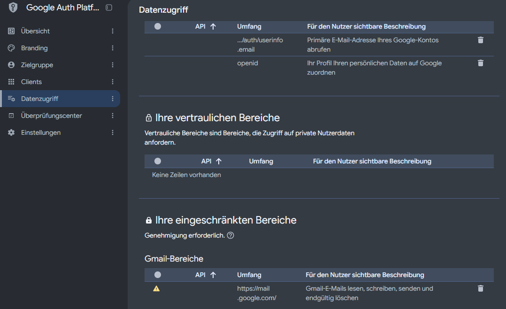
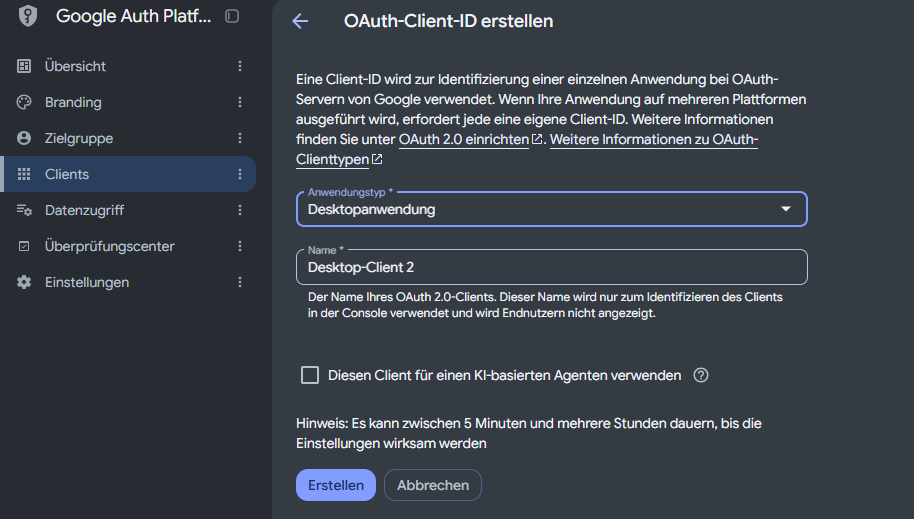
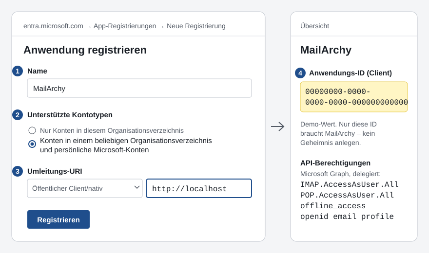
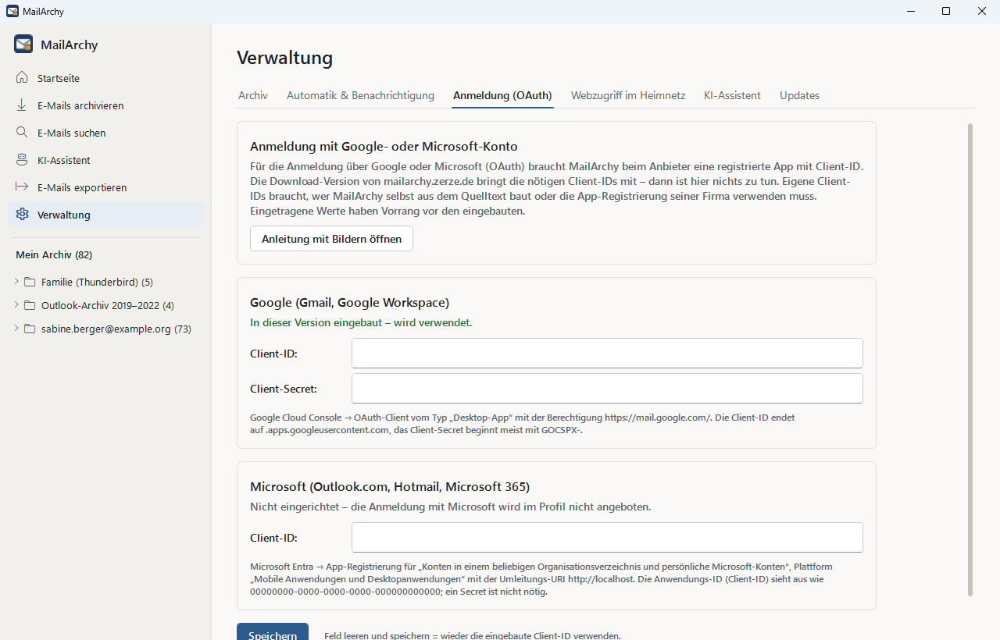

Kostenloses E-Mail-Archiv für Windows
MailVault sichert die E-Mails aus Ihren Postfächern, aus Outlook und Thunderbird in einem durchsuchbaren Archiv auf Ihrem eigenen PC – vollständig, unabhängig vom Anbieter und auf Wunsch verschlüsselt. Die Postfächer werden dabei nur gelesen, nie verändert. Ohne Konto, ohne Cloud, mit offenem Quelltext.
MailVault-Setup-{{VERSION}}.exe · {{SETUP_MB}} MB Windows 10 und 11, 64 Bit SHA-256 und Versionsangaben
- 16.11.2024Stadtwerke LindenauIhre Jahresabrechnung 2024 – Strom und Gas
- 07.11.2024Mobilfunk NordIhre Rechnung für Oktober 2024
- 07.10.2024Mobilfunk NordIhre Rechnung für September 2024
3 Treffer
Warum ein Archiv? Ein Postfach ist keine Sicherung.
E-Mail-Programme und Postfächer – Outlook, Thunderbird, Gmail oder das Webmail Ihres Anbieters – sind zum Lesen und Schreiben gemacht, nicht zum dauerhaften Aufbewahren. Was dort gelöscht wird, ist meist endgültig weg. Und das geschieht öfter durch einen Fehlgriff als durch einen technischen Defekt.
Viele wissen außerdem nicht, dass ihre E-Mails – gerade wenn sie auf dem Handy gelesen werden – nur auf den Servern des Anbieters liegen. Eine eigene Kopie gibt es dann nirgends.
Dabei liest MailVault Ihre Postfächer nur. Es löscht, verschiebt und markiert dort nichts – das Postfach bleibt genau so, wie es ist.
Ein Archiv auf dem PC ersetzt keine Datensicherung des PCs. Kopieren Sie den Archivordner deshalb gelegentlich auf ein externes Laufwerk.
Volltextsuche über alle Postfächer und Jahre
Die Suche durchsucht Betreff, Absender, Text und sogar den Inhalt von PDF-, Word- und Excel-Anhängen. Filter schreiben Sie einfach mit hinein:
von:schule- Absender
jahr:2024- Jahr
anhang:ja- nur mit Anhang
"exakte Phrase"- genau so

Vier Grundsätze, die in jeder Version gelten
- Am Postfach wird nichts gelöscht
- MailVault liest nur. Es gibt keine Funktion, die auf dem Server löscht, verschiebt oder als gelesen markiert – automatische Tests sichern das bei jeder Version ab.
- Das Archiv bleibt auf Ihrem PC
- Keine Cloud, kein Konto, keine Telemetrie. Nichts verlässt Ihren Rechner, solange Sie es nicht ausdrücklich wollen.
- Jede E-Mail kommt bytegenau zurück
- Komprimiert gespeichert, Anhänge nur einmal abgelegt – und trotzdem exakt so wiederherstellbar, wie sie ankam. Export als EML oder MBOX jederzeit.
- Updates verlieren nie Daten
- Neue Versionen kommen signiert von dieser Seite. Vor jeder Umstellung wird gesichert; startet etwas nicht, kehrt MailVault von selbst zur alten Version zurück.
Auch diese Webseite setzt keine Cookies, verwendet keine Zählpixel und lädt nichts von fremden Servern.
Funktionen im Überblick
- Alle üblichen Quellen
- IMAP und POP3 (Gmail mit Google-Anmeldung, GMX, WEB.DE, T-Online …) mit automatischer Einrichtung, Outlook-Dateien (.pst/.ost) auch ohne installiertes Outlook, Thunderbird, EML- und MBOX-Dateien.
- Archiviert von selbst
- Zeitplan pro Postfach, läuft im Infobereich mit, holt verpasste Termine nach und meldet sich per E-Mail, wenn etwas nicht klappt.
- Auf Wunsch verschlüsselt
- Das ganze Archiv mit AES-256 geschützt – mit Ihrem Kennwort, dazu ein Wiederherstellungsschlüssel für den Notfall.
- Sicher anzeigen
- Externe Bilder und Tracking-Pixel bleiben blockiert, Skripte laufen nie.
- Im Heimnetz auf dem Handy
- Optionaler Webzugriff zum Lesen für Familienmitglieder – jeder sieht nur die Postfächer, die Sie freigeben.
- KI-Assistent, wenn Sie wollen
- Fragen Sie Ihr Archiv in eigenen Worten („Welche Verträge laufen noch?“) – mit Ihrem eigenen Claude-Schlüssel und Belegen zu jeder Aussage. Ohne Schlüssel bleibt alles lokal.
- Export jederzeit
- Einzelne Ordner oder das ganze Archiv als EML-Dateien oder MBOX – Ihre Daten bleiben Ihre Daten.
- Hell, dunkel, vier Sprachen
- Folgt der Windows-Einstellung und dem Kontrastdesign; Deutsch, Englisch, Französisch und Spanisch.
Offener Quelltext, mit KI-Unterstützung entwickelt
MailVault ist „vibe-coded“: Das Programm wurde im Dialog mit einer KI entwickelt, mit Claude von Anthropic. Ein Mensch hat festgelegt, was MailVault tun soll und was nicht; einen großen Teil des Codes hat die KI geschrieben.
Deshalb liegt der gesamte Quelltext offen auf GitHub. So lässt sich nachprüfen, dass MailVault am Postfach nichts löscht: Die Tests, die genau das sicherstellen, kann jeder lesen und selbst ausführen.
Quelltext auf GitHub ansehenInstallation in drei Schritten
- Setup herunterladen und starten.
- Windows SmartScreen warnt beim ersten Start, weil das Setup nicht mit einem gekauften Zertifikat signiert ist. Klicken Sie auf Weitere Informationen → Trotzdem ausführen.
- Ein Postfach oder eine Outlook-Datei hinzufügen. Fertig.
Danach kommen Updates direkt über die App – signiert und vor der Installation geprüft.
- Aktuelle Version
- {{VERSION}}
- Veröffentlicht
- {{DATE}}
- Setup
- MailVault-Setup-{{VERSION}}.exe · {{SETUP_MB}} MB
- Portable ZIP
- herunterladen · {{SIZE_MB}} MBOhne Setup: entpacken und starten. Mit einer leeren Datei portable.txt neben MailVault.exe bleibt alles im Programmordner, etwa auf einem USB-Stick.
- System
- Windows 10 oder 11, 64 Bit
- Preis
- Kostenlos
- SHA-256 (ZIP)
- {{SHA256}}
Gmail und Outlook: mit dem Konto anmelden statt mit Passwort
Gmail ist in der Download-Version schnell eingerichtet: Adresse eingeben, Automatisch einrichten, dann Bei Google anmelden …. Die Anmeldung läuft in Ihrem Browser direkt bei Google. MailVault bekommt nur die Erlaubnis, Ihre E-Mails zu lesen, und nie Ihr Kennwort.
Diese Anmeldung heißt OAuth. Damit ein Programm sie nutzen darf, muss es beim E-Mail-Anbieter als App registriert sein und dessen Client-ID kennen. Die Download-Version von dieser Seite bringt die Registrierung für Google mit. Wer MailVault selbst aus dem Quelltext baut oder die Registrierung seiner Firma verwenden muss, trägt eigene Client-IDs unter Verwaltung → Anmeldung (OAuth) ein – die Anleitungen unten zeigen, wie das geht.
- Gmail, Google Workspace
- Mit Google-Konto anmelden (in der Download-Version eingebaut) oder mit App-Passwort.
- Outlook.com, Hotmail, Microsoft 365
- Nur mit Microsoft-Konto: App-Passwörter nimmt Microsoft für fremde Mailprogramme seit September 2024 nicht mehr an. Die eingebaute Microsoft-Anmeldung folgt mit einem Update. Bis dahin eine eigene Client-ID eintragen oder die Outlook-Datendatei (.pst/.ost) einlesen.
- GMX, WEB.DE, T-Online, iCloud, Yahoo …
- Mit Kennwort bzw. App-Passwort; die Servereinstellungen ermittelt MailVault selbst. Bei GMX und WEB.DE muss der Zugriff per IMAP/POP3 im Postfach eingeschaltet sein.
Anleitungen
Für die Download-Version reicht meist die erste Anleitung. Die übrigen brauchen Sie nur ohne Google-Anmeldung, für eine selbst gebaute Version oder für Microsoft.
Gmail mit Google-Konto verbinden
- In MailVault E-Mails archivieren → E-Mail-Server (IMAP) wählen, die Gmail-Adresse eintragen und Automatisch einrichten klicken.
- Unter Anmeldung steht dann Google-Konto (Gmail, Google Workspace). Auf Bei Google anmelden … klicken – der Browser öffnet sich.
- Konto wählen. Den Hinweis „Google hat diese App nicht überprüft“ mit Erweitert → Weiter zu MailVault bestätigen: Die Prüfung durch Google steht für MailVault noch aus.
- Wichtig: Auf der Seite mit den Berechtigungen das Häkchen bei Gmail setzen. Google wählt es nicht vor; ohne Häkchen gibt Google nur die Anmeldung frei, nicht die E-Mails.
- Zurück in MailVault: Verbindung testen und Ordner laden, Ordner wählen, speichern. Fertig.
Google beschreibt die Berechtigung als „lesen, schreiben, senden und endgültig löschen“, weil es für IMAP keine engere gibt. MailVault liest trotzdem nur – das sichern die öffentlichen Tests im Quelltext ab.
Gmail-App-Passwort anlegen
- Im Google-Konto die Bestätigung in zwei Schritten einschalten (Google-Konto → Sicherheit). Ohne sie gibt es keine App-Passwörter.
- myaccount.google.com/apppasswords öffnen, als App-Name MailVault eingeben und Erstellen klicken.
- Das angezeigte 16-stellige Passwort kopieren. Google zeigt es nur einmal an.
- In MailVault unter Anmeldung „Kennwort bzw. App-Passwort“ wählen und das App-Passwort als Kennwort einfügen.


Eigene Google-Client-ID anlegen (selbst gebaute Version)
- console.cloud.google.com öffnen, ein neues Projekt „MailVault“ anlegen und unter APIs & Dienste → Bibliothek die Gmail API aktivieren.
- Google Auth Platform → Branding: App-Name, Support-E-Mail und Links zu Startseite und Datenschutzerklärung eintragen.
- Zielgruppe: Extern. Für den Alltag App veröffentlichen („In Produktion“). Im Status „Test“ läuft die Anmeldung nach 7 Tagen ab.
- Datenzugriff → Bereiche hinzufügen:
https://mail.google.com/,openidund…/auth/userinfo.email. - Clients → Client erstellen, Anwendungstyp Desktopanwendung, Erstellen. Client-ID und Clientschlüssel kopieren und in MailVault eintragen (letzte Anleitung).



Ohne Überprüfung durch Google können höchstens 100 Konten die Client-ID nutzen, und beim Anmelden erscheint ein Warnhinweis. Für den eigenen Haushalt reicht das.
Eigene Microsoft-Client-ID anlegen (Outlook.com, Hotmail, Microsoft 365)
- Sie brauchen ein Microsoft-Entra-Verzeichnis: ein Microsoft-365-Firmenkonto oder ein kostenloses Azure-Konto. Azure verlangt dabei eine Kreditkarte zur Identitätsprüfung; die Registrierung selbst kostet nichts. Ein reines Outlook.com-Konto genügt nicht.
- entra.microsoft.com → Anwendungen → App-Registrierungen → Neue Registrierung. Name MailVault, Kontotyp Konten in einem beliebigen Organisationsverzeichnis und persönliche Microsoft-Konten.
- Umleitungs-URI: Plattform Öffentlicher Client/nativ (mobil und Desktop), Wert
http://localhost– ohne Port. Dann Registrieren. - Unter API-Berechtigungen → Microsoft Graph → Delegiert hinzufügen:
IMAP.AccessAsUser.All,POP.AccessAsUser.All,offline_access,openid,email,profile. - Auf der Übersicht die Anwendungs-ID (Client) kopieren. Ein Geheimnis (Secret) wird nicht gebraucht.

Bei Firmenkonten muss IMAP bzw. POP3 für das Postfach erlaubt sein, und der IT-Admin muss der App unter Umständen zustimmen.
Client-IDs in MailVault eintragen
- In MailVault Verwaltung → Anmeldung (OAuth) öffnen.
- Bei Google Client-ID und Client-Secret eintragen, bei Microsoft nur die Client-ID. Speichern.
- Darüber zeigt MailVault, welche Client-ID gilt. Ein leeres Feld bedeutet: die eingebaute verwenden.
- Postfächer, die schon mit einer anderen Client-ID angemeldet waren, einmal neu anmelden (Profil öffnen → Erneut … anmelden). MailVault nennt sie nach dem Speichern.

MailVault unterstützen
MailVault ist kostenlos und bleibt es. Wer mag, hilft dem Entwickler mit einem Beitrag, Server und Weiterentwicklung zu bezahlen.
Der Beitrag ändert nichts: Sie bekommen dieselbe App wie alle anderen, ohne Konto, ohne Freischaltung, ohne Werbung. Er ist deshalb kein Preis für eine Leistung, sondern ein freiwilliger Zuschuss.
Mit PayPal unterstützenBestätigung gewünscht?
Auf Wunsch gibt es eine Zahlungsbestätigung mit Datum, Betrag und den Anbieterangaben aus dem Impressum. Schicken Sie dazu nach der Zahlung die PayPal-Transaktionsnummer an mailvault@zerze.de.
Keine Umsatzsteuer ausgewiesen: Der Beitrag ist freiwillig und hängt mit keiner Gegenleistung zusammen (echter Zuschuss). MailVault ist nicht gemeinnützig; eine Spendenquittung ist daher nicht möglich.
Häufige Fragen
Braucht MailVault eine Internetverbindung?
Nur zum Abholen von E-Mails aus Postfächern und für die Update-Suche (abschaltbar). Suchen, Lesen und Exportieren funktionieren komplett offline.
Wo liegen meine Daten?
In einem Ordner Ihrer Wahl auf Ihrem PC – zum Sichern einfach den Ordner kopieren. Wer das ZIP mit einer Datei portable.txt neben MailVault.exe nutzt, hat alles im Programmordner, etwa auf einem USB-Stick.
Warum warnt Windows beim ersten Start?
SmartScreen kennt Programme ohne gekauftes Signaturzertifikat noch nicht und warnt deshalb. Was im Setup steckt, können Sie im offenen Quelltext auf GitHub nachlesen. Updates prüft MailVault danach selbst anhand einer Signatur.
Funktioniert Gmail mit Zwei-Faktor-Anmeldung?
Ja. Am einfachsten melden Sie sich in MailVault mit Ihrem Google-Konto an – dann braucht es kein Passwort in MailVault. Alternativ geht ein App-Passwort aus Ihrem Google-Konto. Beides steht oben in den Anleitungen.
Und Outlook.com, Hotmail oder Microsoft 365?
Microsoft lässt fremde Mailprogramme nur noch mit der Microsoft-Anmeldung (OAuth) zu, App-Passwörter funktionieren dort nicht mehr. Die eingebaute Microsoft-Anmeldung kommt mit einem Update. Bis dahin können Sie eine eigene Client-ID eintragen oder, wenn Outlook auf dem PC eingerichtet ist, dessen Datendatei (.pst/.ost) archivieren.
Gibt es MailVault für Mac oder Linux?
Nein, MailVault läuft unter Windows 10 und 11. Der Webzugriff im Heimnetz funktioniert aber mit jedem Browser, auch auf Mac, iPhone und Android.
Was passiert mit meinen E-Mails beim KI-Assistenten?
Nichts, solange Sie ihn nicht einschalten. Mit Ihrem eigenen Claude-Schlüssel gehen nur die Auszüge an Anthropic, die zur Beantwortung Ihrer Frage nötig sind – Sie sehen jede Quelle.
Wie entferne ich MailVault wieder?
MailVault beenden, den Ordner %LOCALAPPDATA%\Programs\MailVault und die Verknüpfung im Startmenü löschen – fertig, Administratorrechte braucht es nicht. Ihr Archiv liegt getrennt davon und bleibt, bis Sie es selbst löschen.
MailVault kostenlos herunterladen
MailVault-Setup-{{VERSION}}.exe · {{SETUP_MB}} MB Portable ZIP ({{SIZE_MB}} MB)